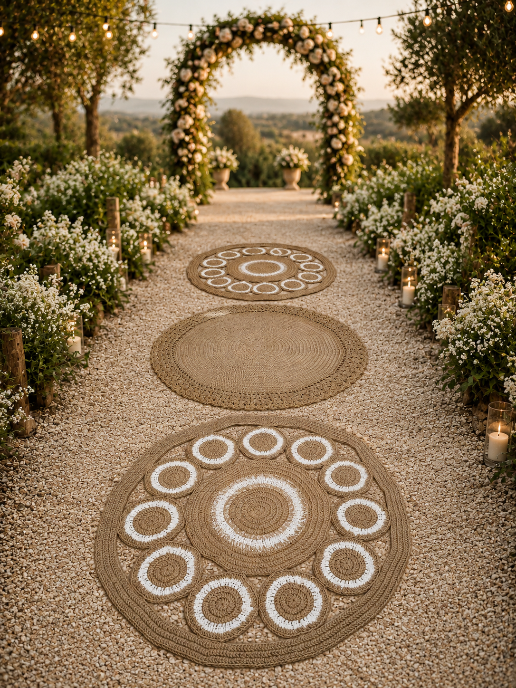
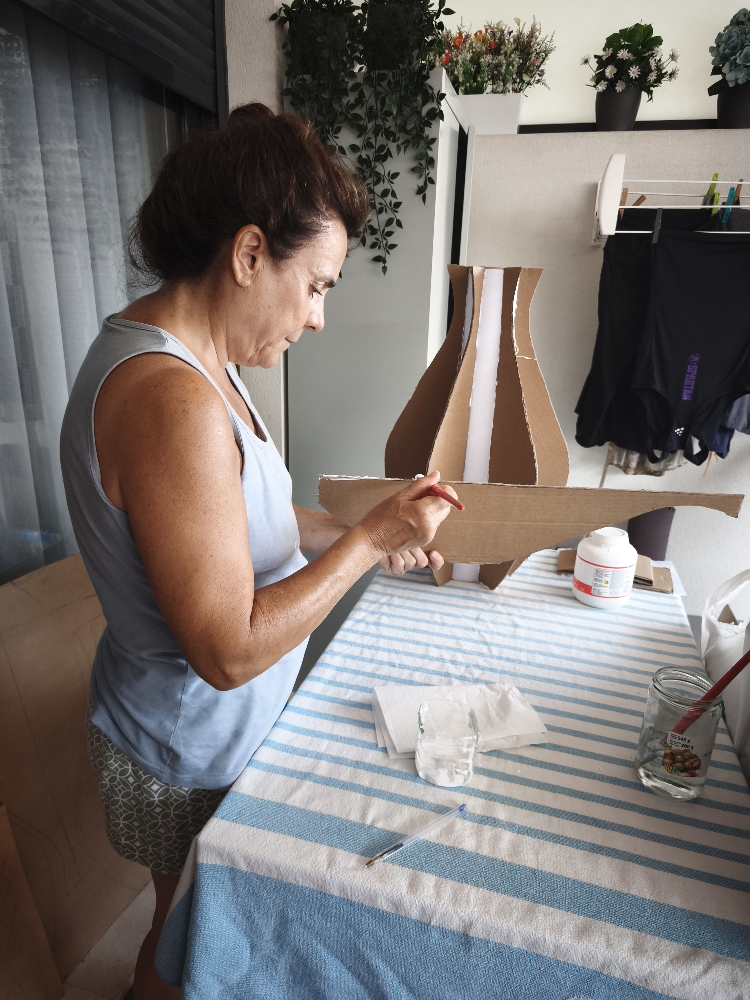
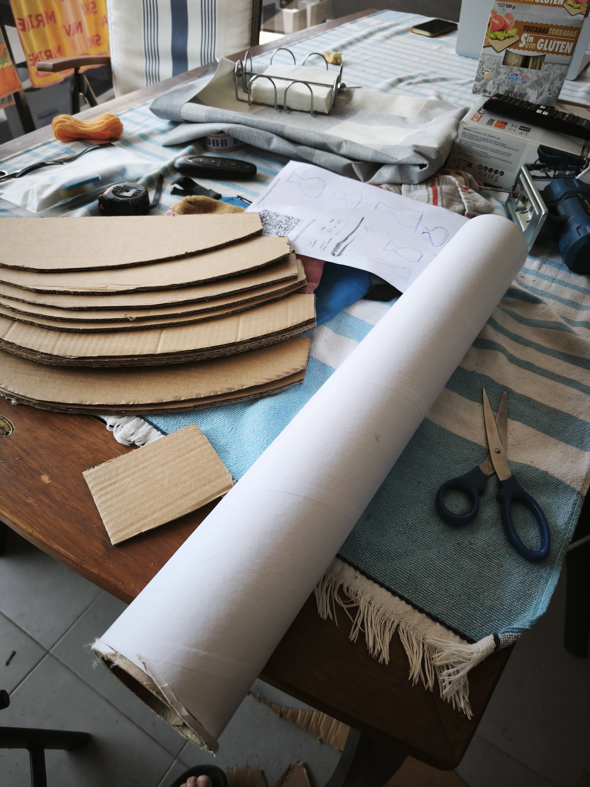
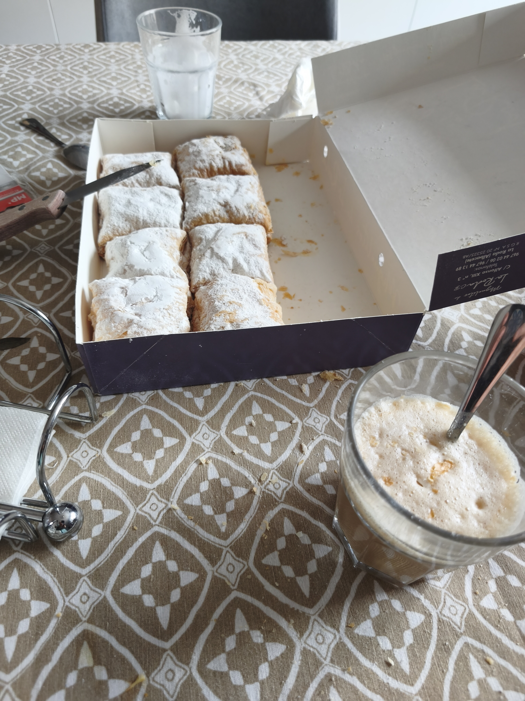
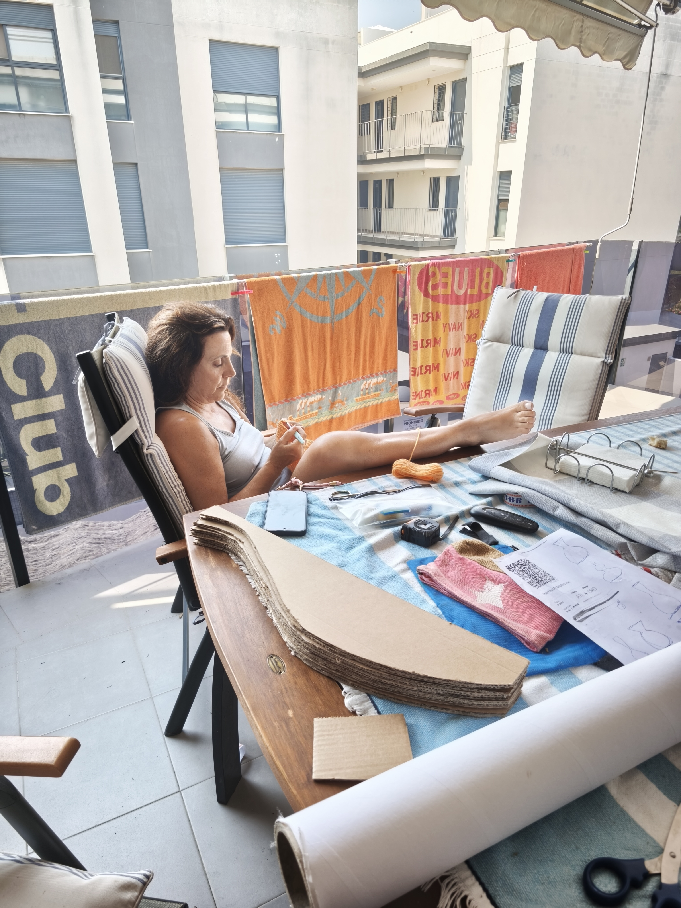
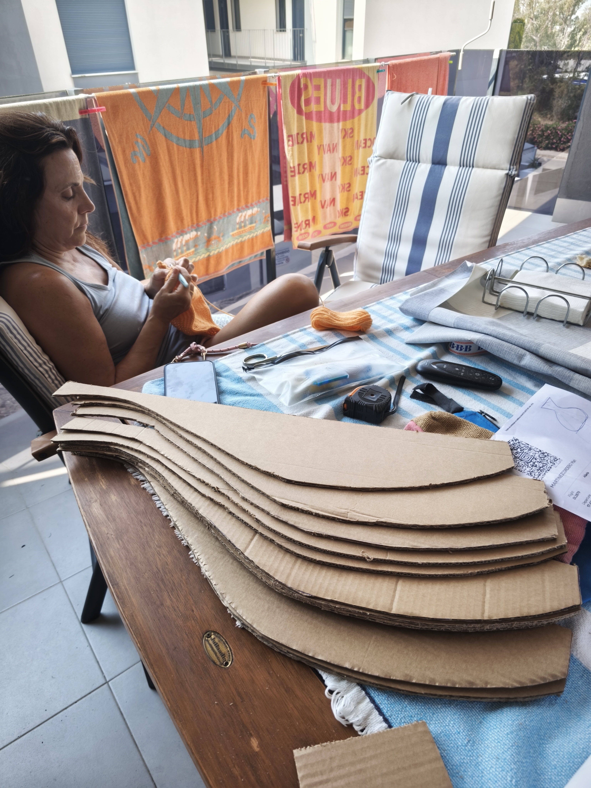
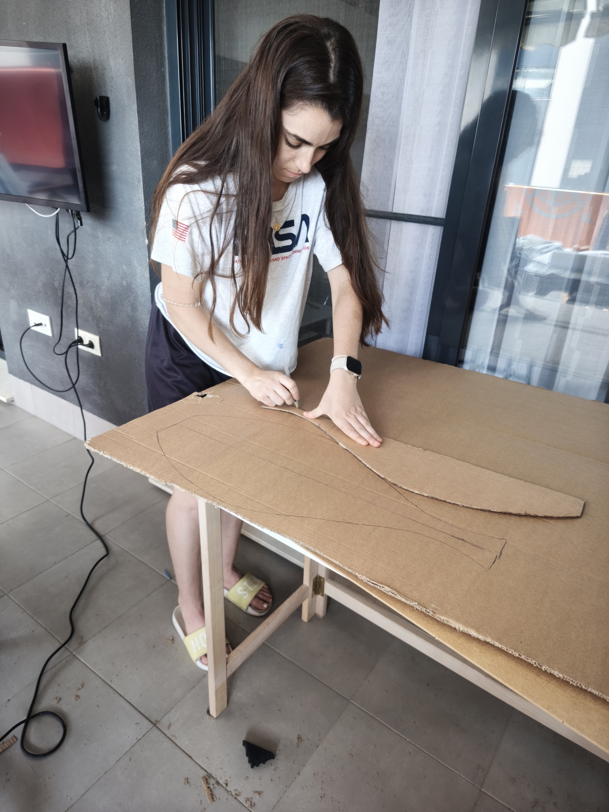

Artesanía hecha con cariño
Detalles únicos para momentos inolvidables.
Creaciones artesanales de Teresa para celebrar, decorar y regalar. Cada pieza se hace con calma, cuidando lo que la hace especial.

Hecho a mano
Inspirado en la naturaleza
Creado con cariño
El catálogo de Teresa
Piezas con su propia historia.
Una selección de creaciones artesanales para vestir tus celebraciones y dar calidez a cada rincón.
Cada creación es especial y puede variar en forma o acabado. Escríbenos para consultar disponibilidad y opciones de personalización.


Detrás de cada pieza
Del taller de Teresa, a un lugar especial.
Cada creación empieza con una idea y va tomando forma poco a poco. En el taller, Teresa combina materiales, texturas y paciencia para dar vida a piezas únicas.
Porque lo hecho a mano no solo decora: también guarda el tiempo, el cuidado y el cariño de quien lo creó.
Cuéntanos tu ideaUn vistazo al proceso
Las ideas también se trabajan.
De los primeros trazos a las últimas puntadas: así va tomando forma cada creación.




¿Tienes algo en mente?
Hagamos especial tu momento.
Cuéntanos qué estás buscando. Teresa te ayudará a encontrar una pieza o a imaginar un detalle hecho para ti.
Escríbenos por WhatsAppSin precios estándar: cada encargo se habla directamente y con cariño.